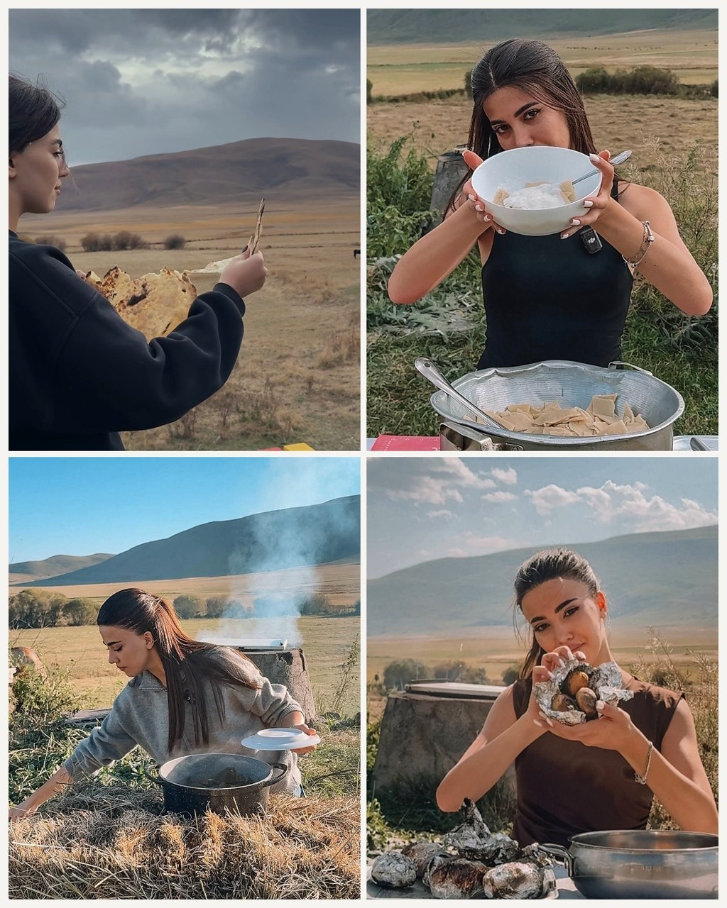

Ծանոթացեք
Մարինայի մասին
Մարինայի խոհանոցը․ համ, որ հիշողություններ է արթնացնում։
Ամեն ինչ սկսվել է տատիկի տան ջերմ մթնոլորտից, կիրակնօրյա ընտանեկան սեղանից ու այն բույրերից, որոնք մինչ օրս հարազատ հիշողություններ են արթնացնում։ Հենց այնտեղ Մարինան բացահայտեց խոհանոցի ամենակարևոր գաղտնիքը՝ իսկական համը ծնվում է սիրուց, հոգատարությունից և ավանդույթների հանդեպ ջերմ վերաբերմունքից։
Այսօր Մարինան իր խոհանոցում վերակենդանացնում է ընտանեկան բաղադրատոմսերը՝ պահպանելով դրանց հարազատ համն ու ավելացնելով ժամանակակից շունչ։ Յուրաքանչյուր ուտեստի մեջ մի փոքր հիշողություն կա, մի պտղունց ստեղծագործականություն և մեծ սեր՝ այն մարդկանց հանդեպ, որոնց համար պատրաստվում է։
Մարինայի խոհանոցը պարզապես բաղադրատոմսեր չեն։ Այն համերի, հիշողությունների և ընտանեկան ջերմության պատմություն է՝ ստեղծված ձեզ հետ կիսվելու համար։
- 0+ տարվա փորձ
- 0+ բաղադրատոմս
- 0+ գոհ հյուր